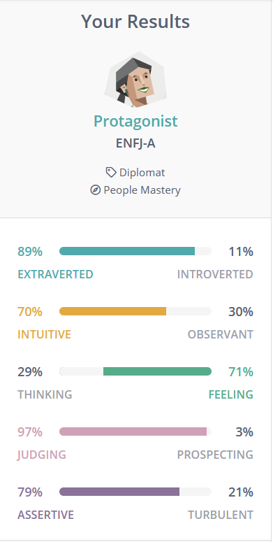
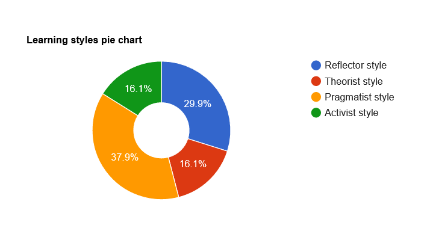

This test made me clearly aware of what kind of personality I am in my life and work. For me, I am enthusiastic and responsible. I can feel the difficulties encountered by others in life and am willing to help. I like to complete tasks with others, and hope that I and my actions can be recognized and appreciated by others. This personality also has some shortcomings. I will be too selfless and sensitive, pay special attention about other people's problems and opinions, which will cause me to be distracted in my own affairs.In teamwork, I have excellent expression skills and a warm attitude towards others, which allows me to complete tasks well with other members. I have good organizational skills and do my best to complete tasks, so that I will be in the position of a leader.When forming a team, I should choose members who are adept at listening and thinking. When starting a task, I will have a clear idea of my own. At this time, I need other thoughtful teammates to judge my ideas.
According to this test, my learning style is biased towards practicality and observation. If I have a new idea, I will quickly try it first and gain experience. I am good at collecting and analyzing information, and extract what I want from this information. For me, abstract things are not suitable for me. I am more accustomed to taking quick actions and drawing conclusions from experiments.Meanwhile, I may be overconfident, which makes me not want to discuss with others, and only stick to my own ideas, even if that idea may be wrong. I will change my opinion only after I test it myself and get a conclusion, which will delay a lot of time.Based on the results of this test, I think that in the team I am a person who focuses on practical conclusions. When we are faced with a task, I will quickly put forward my own views and take action, not willing to spend time discussing whether this view is feasible. This will save time for our work, but what I need to make sure is that my point of view is not wrong. I may be reluctant to face other people's doubts about me.Therefore, when forming a team, I need to find other teammates who are willing to discuss with me and are patient. Pragmatism allows me to quickly point out the crux of the problem, but at the same time I also need to learn to listen to the opinions of others to avoid problems caused by overconfidence.
According to this test, my learning style is biased towards practicality and observation. If I have a new idea, I will quickly try it first and gain experience. I am good at collecting and analyzing It can be seen from the test results that I am an extrovert, friendly and responsible person. I am proficient in the way of interacting with people, which makes it quite comfortable and relaxing when people get along with me. In the work, I will try my best to be the most appropriate within my abilities, and I am fully aware of my responsibilities.Although I am willing to communicate with others and help others solve problems, I also have some shortcomings, such as being too emotional. I am very susceptible to other people's emotions or language. This sensitive personality will make me pay special attention to other people's thoughts and affect my mood. In teamwork, I am familiar with thinking and have a lot of imaginative ideas. I may be able to communicate well with other team members and exchange ideas with each other, but it is also very likely that I will feel anxious because others deny my ideas. When forming a team, I can better get all members to work together, and there will be no members who cannot participate in the discussion because they are introverted and not good at expressing. This can make teamwork more smooth and successful.